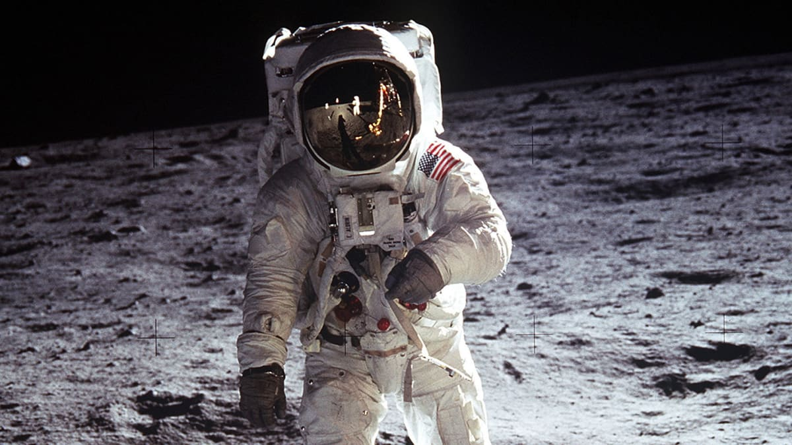
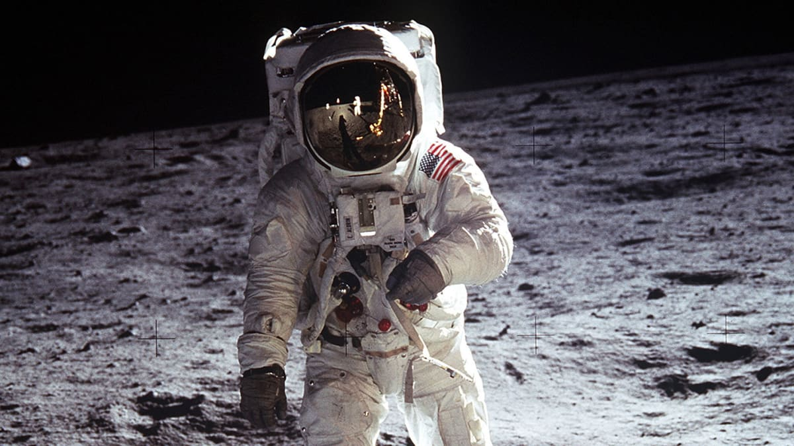
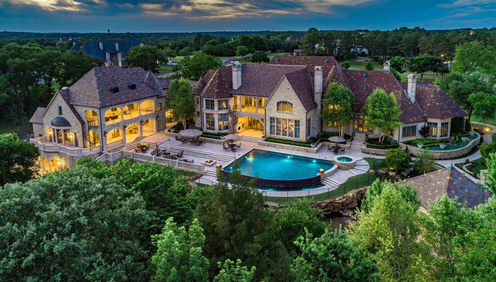
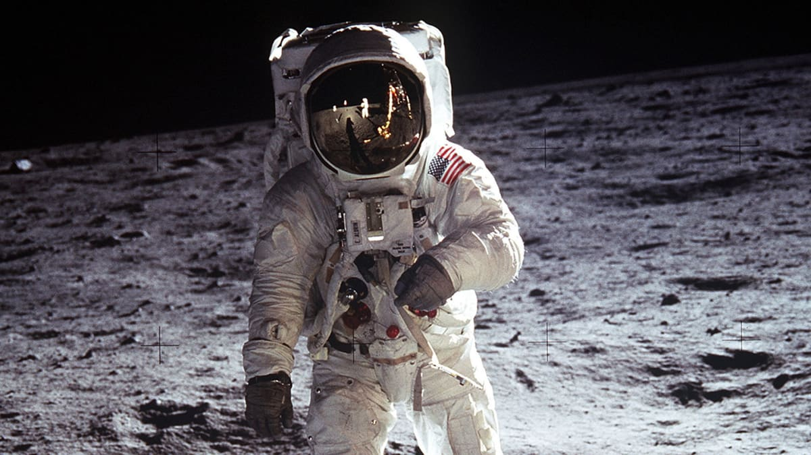

Libertarianism Cannot be Parodied
May 11th, 2021
The video below is made by a jew John Stossel. In this video he desperately attempts to distance Libertarianism from mass censorship by trillion dollar multi national tech conglomerates, before bringing on some other jew named David Boaz to say some of the most unhinged shit I have ever heard in my entire life. I started the video at 55 seconds, but maybe you should just watch it all. At least watch until 1:30, when the list of rights pops up onscreen.
Here, I'll give you an image of it.
Alright let's see, religious freedom. Well, Christians are told that they are forced to bake cakes by malicious perverts. So no. Personal Freedom, that's too vague to even mean anything. Freedom of Speech, well not if you want to say something slightly critical of Globo Homo Schlomo online. Property Rights, yes, Jeff Bezos is very secure in his right to keep the property that he's stolen through this system from us. Markets? I mean that's not even a freedom, they just threw that one in there. Finally, the Rule of law, which, again, is not an actual freedom, it's literally the government.
But it gets better. Keep watching until about two minutes in, when the train shows up. Yes that's right, the train.
 I laugh because infrastructure being necessarily public is one of the oldest owns of LOLbertarianism ever. These faggots try to make arguments about how you could just have every single road be a toll road, or something, which is an unbelievably LARPy pain in the ass.
But anyone with any knowledge of history knows that the cross country rail systems from both Canada and America were government projects. They were government projects, because they needed to be.
LOLbertarianism is such a bankrupt, reality denying ideology that they need to show pictures of government projects to sell their bullshit. Because government projects, whether they be the rail system, the moon landing, or something else, are what are truly inspiring to people.

I laugh because infrastructure being necessarily public is one of the oldest owns of LOLbertarianism ever. These faggots try to make arguments about how you could just have every single road be a toll road, or something, which is an unbelievably LARPy pain in the ass.
But anyone with any knowledge of history knows that the cross country rail systems from both Canada and America were government projects. They were government projects, because they needed to be.
LOLbertarianism is such a bankrupt, reality denying ideology that they need to show pictures of government projects to sell their bullshit. Because government projects, whether they be the rail system, the moon landing, or something else, are what are truly inspiring to people.
"But if it's not the free market it's bad"
But I didn't post this because of what's been said thus far. Dunking on Libertarians is old hat. Instead, just watch this next part.
Yes that's right. I, a man too poor to afford rent, is secretly richer than Louis "the Sun King" Catorz. Even though he had 40 master chefs making meals for him every night, I am secretly richer because I can go to the supermarket and (barely) purchase a variety of produce. Therefore I could make more than 40 dishes.
I mean, I have to actually make them myself, and then eat them on a shitty chair instead of a throne made from gold in a luxurious palace with floor to ceiling paintings, but I could make them, and that's the important part.
Imagine someone who has 40 Gordon Ramsay types making him meals every single night. Imagine how poor that faggot would be. I get to go to the supermarket and make myself something shittier. LOL, I could make infinity meals and that queer has to choose from just 40. I bet he cries himself to sleep looking out the window of his mansion at his Lambourghini.

You might be thinking that the people who live in this mansion have it better than you. But guess what? Jokes on them. They have two private chefs who cook all their meals. That's right, they have to choose between two amazing meals, but we can make ourselves infinity meals by going to the supermarket. So actually we are infinity richer than they are.
Thank god they have those two private chefs, which impoverish them by limiting their culinary choices. I mean, technically the two master chefs could also go down to the supermarket, meaning that they could make infinity meals as well, but that doesn't count, or something.
Truly, Libertarians have a reality based worldview.
I laugh because infrastructure being necessarily public is one of the oldest owns of LOLbertarianism ever. These faggots try to make arguments about how you could just have every single road be a toll road, or something, which is an unbelievably LARPy pain in the ass.
But anyone with any knowledge of history knows that the cross country rail systems from both Canada and America were government projects. They were government projects, because they needed to be.
LOLbertarianism is such a bankrupt, reality denying ideology that they need to show pictures of government projects to sell their bullshit. Because government projects, whether they be the rail system, the moon landing, or something else, are what are truly inspiring to people.
